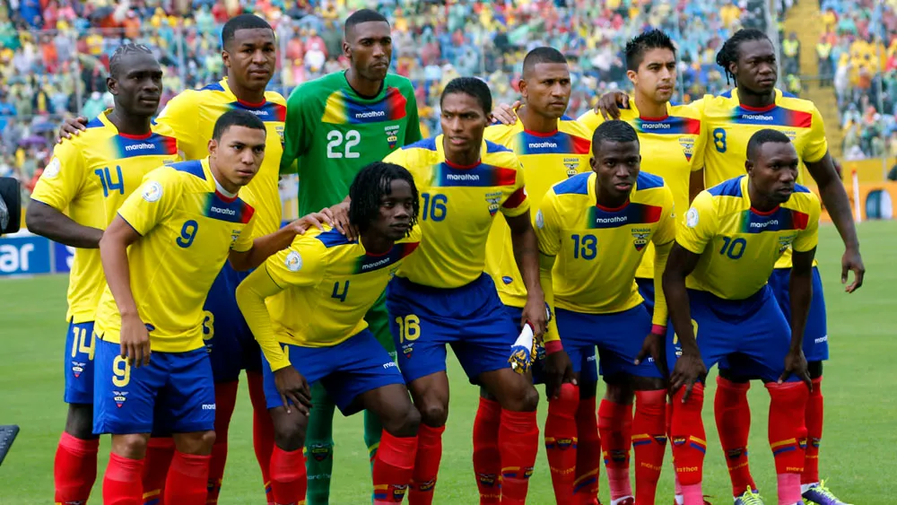

Seleção do Equador
Seleção do Equador nas Copas do Mundo
É controlada pela Federación Ecuatoriana de Fútbol. É atualmente uma grande equipe que vem evoluindo sistematicamente ao longo dos últimos anos, tendo disputado os Mundiais de 2002 e 2006 neste período. A melhor colocação em uma Copa América foi um quarto lugar, em 1993, além do quarto lugar no Sul-Americano extra de 1959.
Na Copa da Alemanha, o Equador chegou às oitavas de final, sendo eliminado pela Inglaterra, com gol de David Beckham.
Nos Jogos Pan-americanos de 2007, o Equador chegou pela primeira vez à final desse campeonato oficial com uma grande e surpreendente campanha: na primeira fase, um empate e duas vitórias, sendo que uma destas contra o favorito Brasil, a quem eliminou da competição. Na semifinal, venceu o "Clássico Andino" contra a Bolívia. Na grande final, disputou a medalha de ouro contra a igualmente surpreendente Jamaica e venceu, em uma virada emocionante, por 2x1 - gols de Jefferson Montero e Edmundo Zura - e, de maneira invicta, conseguiu o tão sonhado título. O técnico campeão é Sixto Vizuete.

Retrospecto da seleção do Equador em Copas do Mundo
1930 - Não participou
1934 - Não participou
1938 - Não participou
1950 - Não participou
1954 - Não participou
1958 - Não participou
1962 - Não se classificou
1966 - Não se classificou
1970 - Não se classificou
1974 - Não se classificou
1978 - Não se classificou
1982 - Não se classificou
1986 - Não se classificou
1990 - Não se classificou
1994 - Não se classificou
1998 - Não se classificou
2002 - 24º Lugar (Primeira Fase)
2006 - 12º Lugar (Oitavas de final)
2010 - Não se classificou
2014 - 17º Lugar (Primeira Fase)
2018 - Não se classificou
Técnico da Seleção de Equador
Gustavo Julio Alfaro
Goleiros
Moisés Ramírez
Hernán Galíndez
Jorge Pinos
Zagueiros
Piero Hincapié
Félix Torres
Robert Arboleda
Fernando León
Xavier Arreaga
Laterais
Abdelkarim Hassan
Homam Ahmed
Musab Khoder
Volantes
Carlos Gruezo
Jhegson Méndez
Michael Carcelen
Meias
José Cifuentes - Meia Central
Moisés Caicedo - Meia Central
Alan Franco - Meia Central
Danny Cabezas - Meia Ofensivo
Jeremy Sarmiento - Meia Ofensivo
Pontas e Centroavantes
Joao Rojas - Ponta Esquerda
Romaria Ibarra - Ponta Esquerda
Gonzalo Plata - Ponta Direita
Ángel Mena- Ponta Direito
Michael Estrada - Centroavante
Enner Valencia - Centroavante
Jordy Caicedo - Centroavante
Djorkaeff Reasco - Centroavante